Virtuoso mapping for the Electrumpet, a hyperinstrument strategy
Abstract
This paper introduces a new Electrumpet control system that affords for quick and easy access to all its electro-acoustic features. The new implementation uses virtuosic gestures learned on the acoustic trumpet for quick electronic control, showing its effectiveness by controlling an innovative interactive harmoniser. Seamless transition from the smooth but rigid, often uncommunicative sound of the harmoniser to a more noisy, open and chaotic sound world required the addition of extra features and scenarios. This prepares the instrument for multiple musical environments, including free improvised settings with large sonic diversity. The system should particularly interest virtuoso improvising electroacoustic musicians and hyperinstrument player/developers that combine many musical styles in their art and that look for inspiration to use existing virtuosity for electronic control.
Author Keywords
hyperinstrument, virtuosity, system design
CCS Concepts
•Applied computing → Sound and music computing; Performing arts;• Hardware → Sensor devices and platforms;
Introduction
Creating a physical hyperinstrument is just a first step into the practice of hyperinstruments [1]. The evaluation of prolonged use of a hyperinstrument by professional musicians provides hyperinstrument designers specifically and NIME designers in general with professional use cases. It further narrates how professional users with an established acoustic practice implement their experiences into their designs. Examples of such evaluations are Cleo Palacio Quentin’s Hyper-flute [2][3] and more recently Sarah Reid’s Migsi[4] with a follow-up article about the artistic work emphasising her particular mapping choices[5]. This article contributes to that same discussion regarding the Electrumpet, describing major developments since its inception in 2008 and an upgrade in 2012, both of which were already presented at NIME[6][7]. Since its inception, the software for the Electrumpet developed gradually, with a major redesign in 2018. This informed a third hardware redesign in 2020. The software redesign of 2018 and the subsequent implementation of new features within the new system have been major improvements for its usability, especially regarding learnability/virtuosity, which are ‘characteristics or criteria that are crucial for the construction of instrumentality’ according to Sarah Hardjowirogo[8].

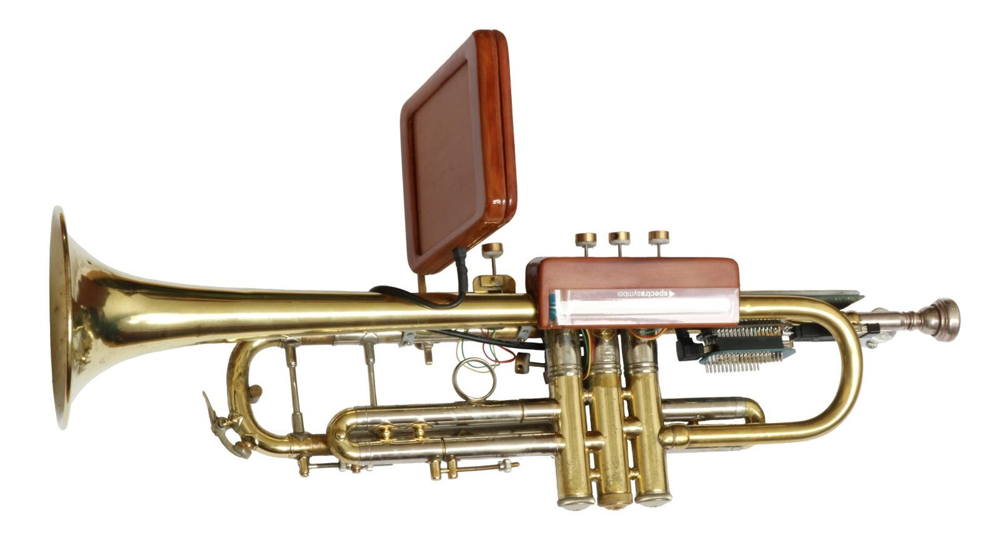
Version 3.0 of the hardware instrument
The software redesign led to the removal of all switches and a repurposing of the functions of other sensors. Such repurposing is not unique. In an interview with Palacio Quentin for PhD research[9], she mentioned the discarding of a sensor after over 20 years of regular use. A good idea implemented at the inception of an instrument can be seen as a nuisance after years of practice. Ideas discarded as novice, for their perceived limitation of the playing experience, can gain viability through the experience of prolonged practice.
Specifically, prolonged use within certain genres leads to distinct design strategies. From the same PhD research, some performing instrument designers saw the software development for the instrument as part of their composition process. For these people the composition is central and while using the same hardware system, they design a different patch / software system for each piece eg [2] and [10]. Others saw the physical instrument and its software as one integrated system. Their design aim is an instrument suitable for all possible operation environments and pieces, including completely improvised settings.[11]
The Electrumpet performs in a mixed practice of standard Jazz music, avant-garde jazz and experimental, improvised music, and both its practice and personal resulted in a multi-functional system design. This was a design/artistic choice; both the compositional and the system approach have their applicability and merit, a particular preference driven by the developer’s practice and vision.[9]
Process
Although the development of an instrument implementing a multi-functional system and the development of an instrument for a specific piece might share their initial design strategy, it will undoubtedly run into obstacles when following this path persistently. With the Electrumpet, this was exactly what happened.
The instrument originally shared similarity with an effect pedal board combined with a live sampling environment controlled physically from the hyperinstrument. Different knobs on the instrument could either change effects, record some sound into buffers and play those back. The construction of a low latency octaver in 2013 needed for a specific playing situation led to an interactive harmoniser using the same technique for other downward intervals. Pitch recognition and a ribbon controller allowed for interactive control of transpositions. The next iteration added upward transposition through a different technique. This resulted in a unique character for the harmoniser, interactively transposing up and down using two different techniques for a better and more versatile sound, while also using pitch tracking for unique chords per note. The interactive harmoniser dramatically increased the complexity of the instrument, though, its control conflicting with existing functionality.
Soon after the euphoria of the novel interactive harmoniser, and after peer approval in the more conventional corners of its musical practice, the instrument went into an ‘identity crisis’. Was it an interactive harmoniser or still an effect instrument? In different playing environments, one or the other prevailed; switching back and forth between different functionalities required ever more knobs. Cramming those on the physical trumpet was no option, as wasn’t the choice for an external control surface [6] [7]. Also, more possibilities had the negative effect of adding complexity and subsequently slower execution, plus an undesirable larger dependency on the visual interface. These issues unintentionally changed the instrument’s playing experience; it reduced ‘flow’ and ‘embodiment’ [12],[13] regarding the Electrumpet and hampered the motivation for further development, as there was no appetite for even more complexity.
While the slow operation of the instrument was acceptable in sessions with most other instrumentalists using live-electronics, all with their own issues regarding virtuoso control, the limitations for virtuoso free improvisation came to the fore in a playing session with Sam Pluta, who successfully designed his system with virtuoso manipulation as its core[11]. Keeping up with Pluta was easier on the acoustic trumpet than with the hyperinstrument.
This experience was frustrating at first and clarified that the interaction design of the instrument had to change fundamentally in order to move forward. Information theory and its concept of chunking [14] and Libet’s experiments on conscious awareness of events [15] inspired a radically new manner to interact with the instrument and a drastic reorganisation of the instrument. Chunking relates to memory, but it is also how jazz musicians organise their playing in a series of connected phrases[16]; the phrase execution speed profits from years of dedicated training. The Electrumpet’s repurposed digital valves got a new function for the execution of digital phrases. It was immediately clear that a valve interface would outperform the previous interface, which had to be learned without the direct tactile, auditive and visual feedback of the physical trumpet [16]. Anecdotally it was Libet’s experiments on the conscious awareness of events that triggered the idea for the new interface design. Fully realising that it takes about 0.5 seconds before humans are consciously aware of a performed action, it suddenly dawned that such a time frame allows for the execution of a four to five note trumpet phrase. Using phrases up to five notes with only the trumpet valves allow for 4686 unique phrases to control the instrument apart from the possibility to nest phrases and combining them. This far exceeds the actual and any future need, making it easy to select phrases rather indiscriminately.
Designing a logical ordering and finding strategies for quick access to all capabilities of the instrument was next to further the virtuoso capabilities of the instrument.
The system redesign
A recurring theme in NIME literature is the transfer of virtuosity from acoustic performers to a new musical interface [17]. Previously, this search for transfer in relation to the Electrumpet subconsciously linked to transferring the musician’s fine control and focus on the relation between analogue sensors and (subtle) sound transformation.
It was the (musical) conversation with Pluta that radically changed the vision regarding virtuosity. In another PhD research interview, Pluta stated that acoustic musicians and their ability for instantaneous jumps between sonic extremities on their instrument, inspired his system[9]. He specifically mentioned extended techniques on acoustic instruments, not so much as in extreme control by the musician, but as sonic extremes ‘chosen’ on the spot. Pluta’s take on instrumental system design made sense, remembering hampered Electrumpet interactions with other musicians within quickly changing sonic environments, using the former system with its slow response.
Quick access to all sonic possibilities of the Electrumpet became the new design focus. The implementation involved the codification of short phrases played on the four electronic valves; valves that feel remarkably similar to trumpet valves.1 The three digital valves next to the acoustic valves mimic the fingering of the range on the acoustic trumpet between C3 and G3. Before, a series of knobs on the instrument determined preset choices and other actions on the instrument. The effectiveness and virtuosity of phrases on the digital valves was such a control improvement that these extra knobs became obsolete.

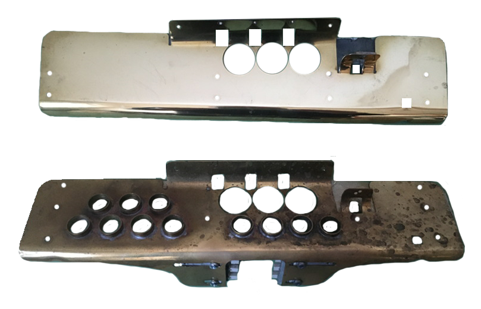
Figure 1: The new and the old top plate of the Electrumpet. All extra holes in the old top plate had switches. 6 more switches are visible at the bottom

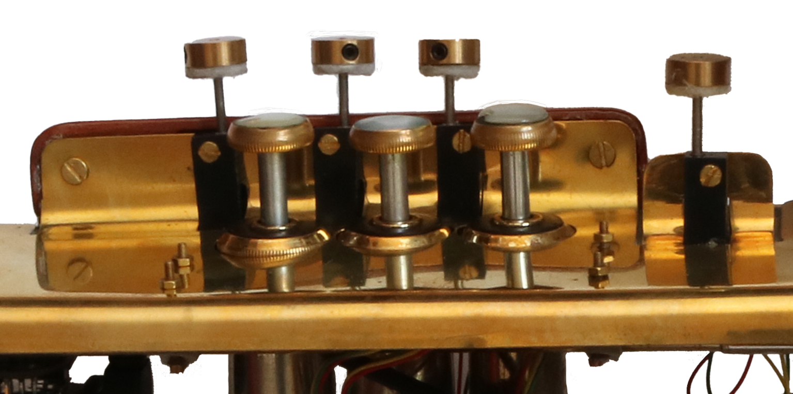
Figure 2: The digital valves next to the normal trumpet valves on the Electrumpet version 3.0
The idea to use phrases for quick access to the settings on the instrument started a redesign cycle under the new focus implementing the following requirements:
things that have to change often and quick will get the shortest phrases;
phrases and their resulting setting change should be easy to remember;
the complete sonic potential of the Electrumpet should be within easy reach.
The last requirement led to the definition of sonic states, where a sonic state is a discreet setting of all discretely configurable parameters within the system2. In Figure 3 spheres in a 3-dimensional reduction of the n-dimensional space of operation represent the sonic states.
Sonic states change from one to the next, in principle, with one parameter at a time. Indian Carnatic music inspired this reduction of complexity. The rhythmic complexity of Indian Carnatic music finds continuity in the application of this principle, making it more accessible for both the player and the audience[18]. The parametric philosophy makes the new system much more comfortable to play with since it allows for easy morphing from one state to the next with complete control over parametric change.
Each blue arrow in Figure 3 represents such a one parameter state change, the reduced three dimensions here could represent a certain form of resynthesis, a certain form of arpeggiation and a certain harmonisation for example.

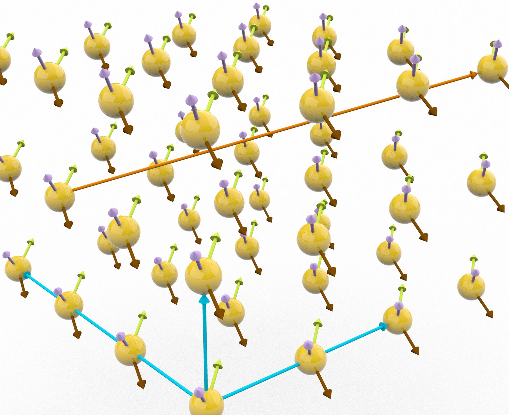
Figure 3: Sonic states and transfer between them
Each sphere also has some smaller arrows attached to it. These represent the use of the analog sensors around a sonic state in yet other dimensions. The long orange arrow represents a jump in the system that crosses several dimensions. This violates the ‘one parameter change at a time’ principal, but allows for instantaneous jumps to certain archetypical sonic states.
Each sonic state change offers a transfer opportunity in all available dimensional directions, and each dimensional direction has its own set of phrase-codes to control those transfers. A parallel transfer from two neighbouring sonic states is not necessarily the same technically, but the effort has been made to make them similar perceptually. The automatic wah wah filter action in granular resynthesis replaces the ramp of delay-times with the spectral delay resynthesis, for example. Although perceptual interaction similarity is also present in the analog sensors, their use there is more free.
Operating the instrument through phrases
The operation of a hyperinstrument is always a challenge, as the acoustic operation has to be combined with the digital operation. Now though, the learning curve for using the digital valves for a new added feature is like learning a new ‘jazz lick’3 by heart or, especially with one and two note phrases, it is like a phrase-code-icon. Coordinating the digital valves with the acoustic valves still poses a challenge, especially in cases of preferably simultaneous action, even though the digital valves are conveniently close to the acoustic valves and easy to access, see Figure 2.
In principle, assigning phrase codes for transfers facilitates intuition. Phrases comprising the first three, four or five notes of the associated piece’s melody or phrases that glue with a harmonisation concept’s construction trigger particular harmonisation sets. The system stores couplings of phrase-codes and the triggered action.
As an example, we take the harmonisations based on the Messiaen modes of limited transposition. Harmoniser chords fitting a Messiaen mode form subsets. A subset is the collection of chords playable using the ribbon controller. First, a phrase is used to choose the mode. Mode 2, the octatonic scale, requires half the octatonic scale up to G to choose it: (C3), Db3, Eb3, E3, F#3, (G3). The C and G are between brackets since these are notes without valve action that phrases always start from and end with. In the system this phrase leads to a four digit phrase-code ‘6431’ (number of half step transpositions downward from G, Db -> 6, Eb -> 4, E -> 3, F# -> 1). The zeros that start and stop the phrase (C and G) are left out. The system considers this a four-note phrase. Second, a ‘one note phrase’ triggers a subset. Here, it determines the number of harmoniser voices. (G), F#, (G) or phrase-code ‘1’ for example, results in a harmonisation-set with chords containing one transposition upwards and one downwards.
Although the system allows for indiscriminate assignment, there is a certain logic and hierarchy to it as seen above. Things that have to be changed quickly use one note phrases, like: the number of voices, a transposition to another key or going from one song section to the next. What a one note phrase does exactly depends on the song/concept; this is an example of nesting. General actions like ‘going up’ or ‘going down’ where ‘going up or down’ use two note phrases and have different meaning depending on the nesting. Harmonisations or particular resynthesis forms and such use longer phrases.
The orange arrow in Figure 3 represents a jump between sonic states that changes several parameters at once. Harmonisations or particular resynthesis forms and such use longer phrases. For example, the single phrase-code ‘363636’ packs four other phrase codes together: ‘313’ (sound: superLine), ‘5252’ (added ring modulation), ‘3636’ (harmonisation: CriticalBand), ‘23’ (arpeggio: spread). The phrase-code repeats (part of) the most signifying subphrase for easy memorisation. Here, that is the CriticalBand harmonisation phrase-code: ‘3636’.
The phrase system is a tool for strategical and deliberate movement through the sonic capabilities of the Electrumpet. The association with the acoustic trumpet-experience of the player delivers logical phrases used in the system. Both the gradual approach and enormous leaps through the system’s sonic states are viable control options.
Harmoniser
Harmoniser Sound
The harmoniser on the Electrumpet was designed with some unique features, such as
the combination of a delay line and IRCAMs superVP vocoder, which gives it a natural brass band sound;
low downward latency, when using that resynthesis method;
simultaneous interactive transposition downward and upward in combination with a pitch tracker;
complete control over temperament with room for microtonal and just intonation tunings.
The ‘natural brass band sound’ resynthesis configuration deserves some extra attention. The pitch shifting technique is different for pitch shifting upwards versus downwards. Especially when shifting downwards, most methods introduce a lot of latency in order to get an acceptable natural sound. Using two delay lines for downward transposition that are alternately triggered by pitch change/onset while suppressing the fundamental of the transposition, produces a low latency light but full trombone like sound.
Upward transposition uses another method; IRCAM’s superVP[19] preserves the formants of the trumpet sound. Using the vocoder for downward transposition would introduce more latency than the current method. The combination of two different resynthesis methods is a bonus to the outspoken character of the sound, and it adds to the perceived independency of the voices.
The affordance for simultaneous up and down pitching introduces new opportunities from an orchestration perspective as well; the normal ‘comfortable’ pitch range of the trumpet is in the middle of the musical range. It most significantly offers new opportunities from a perceptual perspective; contrapuntal voices above and below the source material facilitate an immersed experience for both player and audience.
Other available methods of resynthesis are: granular synthesis, additive synthesis and a form of voice synthesis based on zero-crossings in the trumpet sound. The brass band configuration, called ‘superLine’ in the system, stays closest to the sound of a typical horn section, though, and applies in practice.
Harmoniser interaction
As shown in the ‘Operating the instrument through phrases’ section, the various options for harmonisation refer to pieces and harmonisation concepts; these often divide into subsets. Subsets are either sections of a piece with a chord progression or correspond with the number of voices in the transposition; ‘one note phrases’ trigger them. Alternatively, in some pieces and concepts, one note phrases trigger transposition.
Pieces/concepts or, where relevant, subsets, contain several chords4. These chords divide evenly over the length of a ribbon controller sensor using quantised segments.

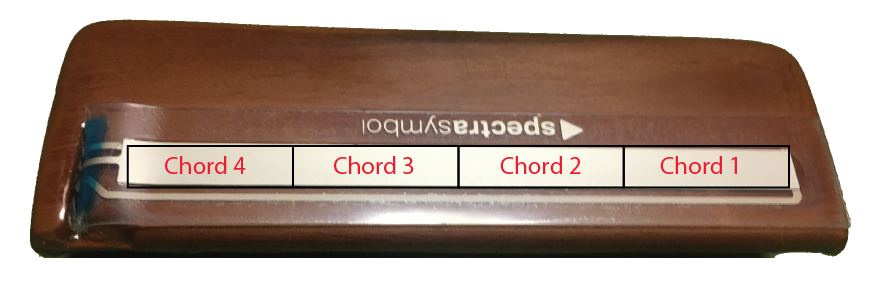
Figure 4: Showing the division of a (sub)set of in this case four chords over the full length of the ribbon controller on the instrument.
Touching the ribbon controller on a certain segment will select a chord representation/symbol. The sounding harmonisation subsequently depends on the note that is recognised by the pitch detection. Haptic feedback emphasises the perception of the borders between the chords.
A special section of the system facilitates the construction of the chords for the instrument; just intonation fractions and tuning in cents are options. Algorithms constructed most chords and chord families, though.
Harmoniser scenarios
Currently, there are three different scenarios for interacting with the harmoniser. This section features a few video-examples of the interaction. Each example is a direct recording without editing, mixing or mastering. Mirroring the player’s image makes for easy comparison between the thumb movement and the slider in the patch.
1) Following a chord progression
This scenario uses the chords of a piece in chronological order. While playing the melody or an improvisation, the thumb follows the chord progression, and the system harmonises based on the current chord and trumpet pitch. An (improvised) harmonised solo transfers into a Big Band horn section playing an arrangement.
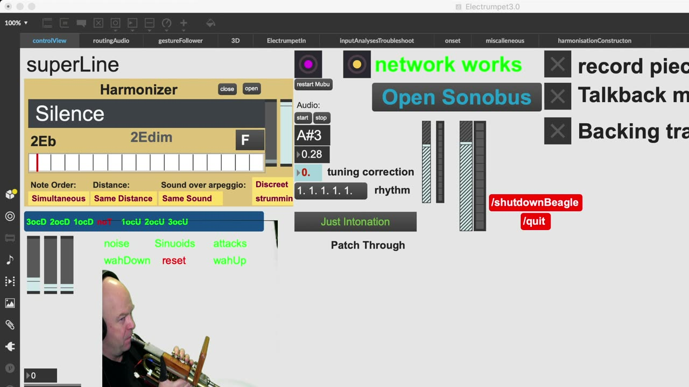
▶Video 1: Silence, fixed chords
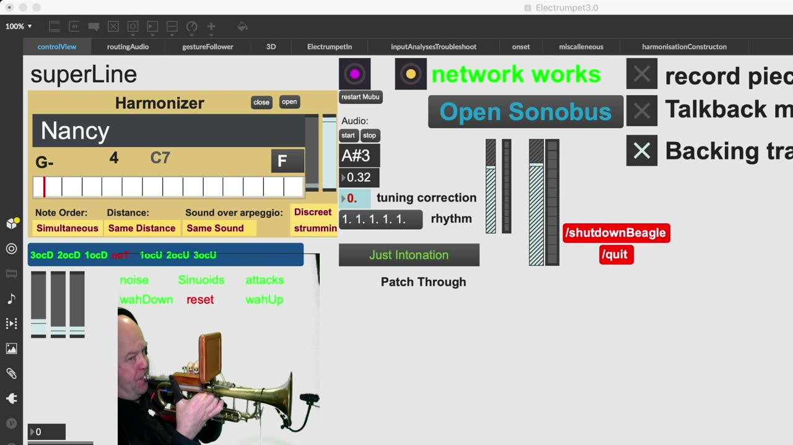
▶Video 2: Nancy with the laughing face (with backing track)
Video 1 demonstrates how one-note-phrases add voices to the harmoniser arrangement, starting with one added voice and adding more voices along the way (“Silence” by Charlie Haden). In video 2 (“Nancy with the laughing face” by Jimmy Van Heusen) one-note-phrases are used to go from chord progression part to chord progression part.
2) Interactive (modal) play
In this scenario, the set only comprises two to four chords. The chords’ use is not chronologically as above, but interactively. For example, a set contains the same chord in two variants: closed and open position. When the Trumpet voice is in the middle of a triad, the top and bottom voice can then move in counterpoint using the combination of pitch change and ribbon controller action. Here, one-note-phrases trigger key change.
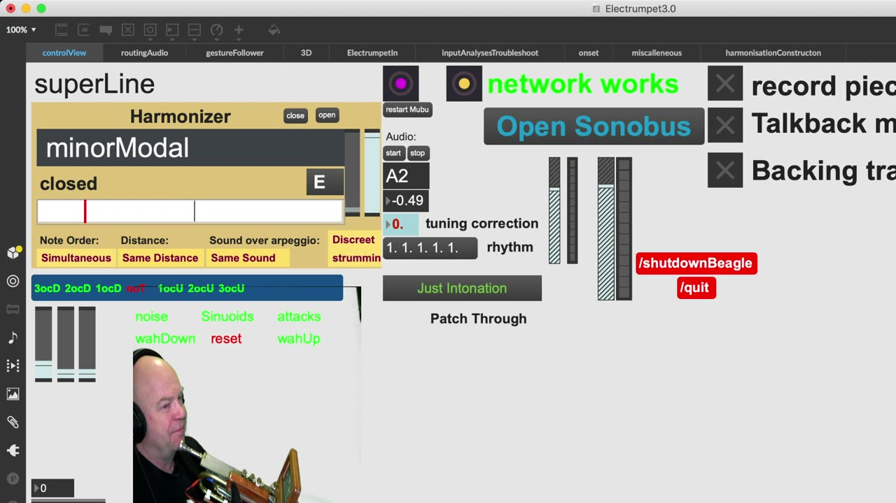
▶Video 3: Modal interactive play. first there is one voice in the middle with a half step modulation, later there are four voices in the middle. In each case, the added top and bottom voice are moving in counterpoint controlled by the ribbon controller.
Figure 5&6 show the harmonisation construction of the three voiced example:

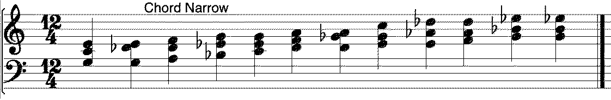
Figure 5: Closed position of chord per note (Dminor modality)

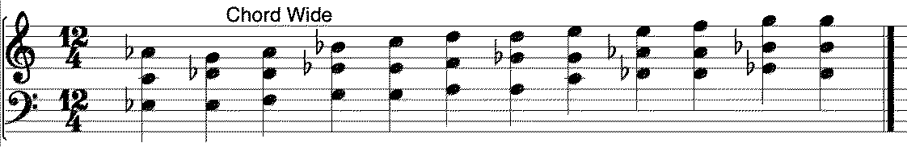
Figure 6: Open position of chord per note (Dminor modality)
The notes in the middle of the chords (the chromatic scale starting at C) represent the played trumpet pitches. The outer notes represent the resulting harmoniser pitches.
3) Abstract/symmetric chord sets
Abstract chord sets are sets that are not constructed with a functional tonal or harmonic idea in mind. The inspiration came from Charles Ives’ ‘Central Park in the Dark’s violin section but has since incorporated ‘Critical Band’ (inspired by James Tenney), the limited transposition modes of Messiaen, the 31TET scale and several interpretations of the overtone series. Most of these sets are ‘symmetrical’ with an equal number of voices transposed up and down from the played trumpet note to create an immersed experience. Their interactive usage can be similar to the interactive manner of scenario 2.
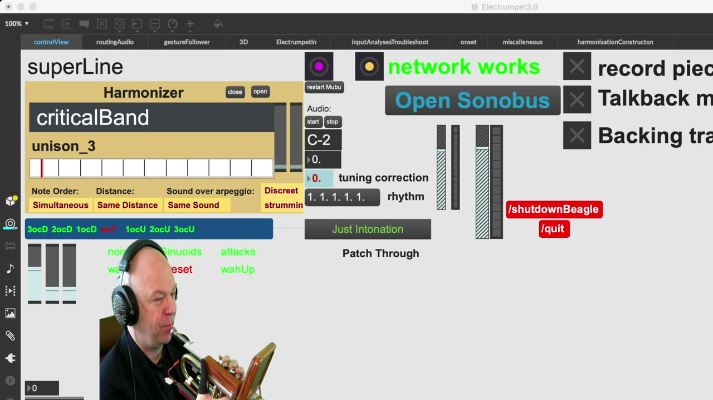
▶Video 4: Abstract sets. Moving from Critical Band to Charles Ives’ Central Park in the Dark chords to Messiaen’s first mode of limited transposition (the whole tone scale). The transitions are deliberately similar.
Artistic use and context discussion, the harmoniser and the valve system
The interplay between accessibility and the shaping of musical material is not only a technical design issue but also benefits from an instrumentalist approach. The trumpet is not a chord instrument, but the Electrumpet is. Variation in the thickness of chords, emphasis on certain chord notes, arpeggio timing, etcetera were all implemented and are accessible for the player. In the former system, such delicacy was accidental. To reach the same interaction richness of multi-voiced play that established chord instruments afford requires many more improvements and much more practice, though. Still, an instrument like the Electrumpet has a lot of added value as it has opportunities that these instruments lack, like fast microtonally precise transpositions and multiple voices moving through each other.
The ability to learn virtuosity in the manipulation of delicate features depends on consistent instrumental interaction, even during simultaneous system expansion. The new design philosophy requires additional features not to influence the subtlety of existing interactions unless it is a deliberate embellishment. Unexpected responses used to be a nuisance that influenced confidence in performance situations. The new system is modular and uses the MVC principle inspired by Jamoma [20] to allow for sustained innovation. Implementing disruptive ideas is still possible, but now happens within a controlled environment.
A valve system that uses phrases to control the instrument is easier to learn, easier to implement, easier to remember, easier to nest in a logical order, easier to link to intuition, faster to execute and more reliable in its execution than the previous dedicated interactive knob system. Subsequently, the confidence in the instrument has improved.
Implementing the modular approach
The development of the phrase system was paired with the development of a modular multi timbral system for sound resynthesis. The system has 12 voices, these are either 12 voice-synthesis channels, 12 granular channels, 12 adaptive synth channels, 12 superVP channels or 12 delay line channels. All voices are individually activated and deactivated by the system so as to run as efficiently as possible.
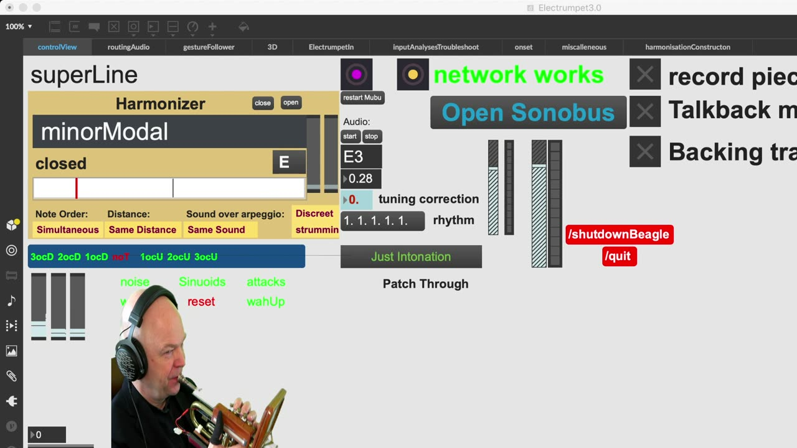
▶Video 5: Four different ways of sound processing on the Electrumpet using the same trumpet phrase and harmonisation.
Arpeggiator
Harmoniser arpeggiation is a first attempt to emulate non-simultaneous interactions on chord instruments and functions as a transitional opportunity or a sonic state in its own right. Currently, arpeggiation can be up, down, outward, inward, stair-wise (two up, one down and vice versa), sub-chords up and sub-chords down. When arpeggiating, the individual voices become more noticeable, and playing with the sound processing of these voices is much more clear and attractive than when notes sound simultaneously. Aspects of spatialisation and ‘movement’ and the use of extended/‘noisy’ acoustic techniques became more interesting to play with.
Phrase codes control sound processing, but the onboard 9-axis sensor controls it to. Arpeggiation stimulated the expansion of the harmoniser repertoire with more abstract chord sets that afford for ‘melodic’ use. The arpeggiation timing is variable and controlled through valve speed.
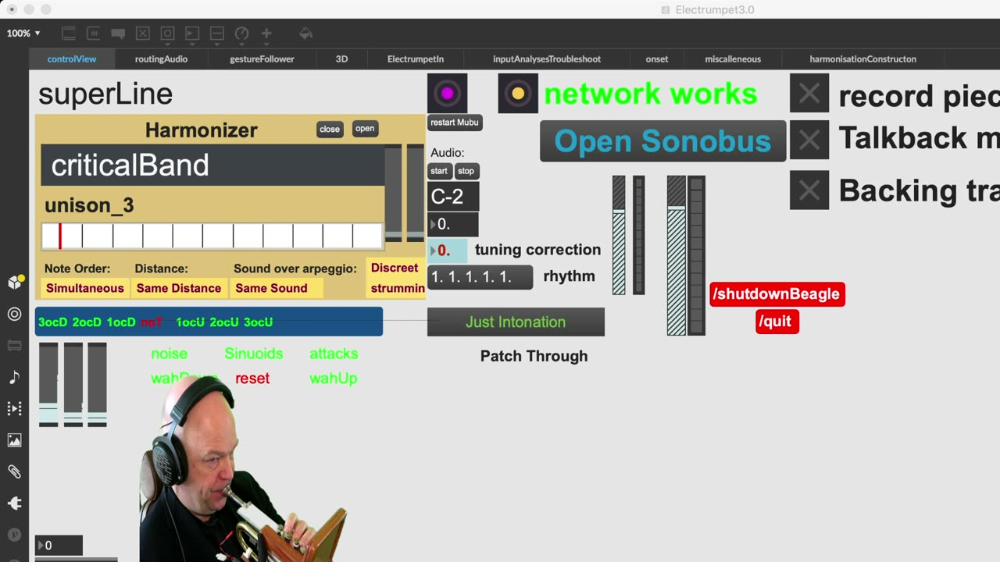
▶Video 6: Unplanned improvisation using different techniques within the system. Also notice the ring modulation addition, which is a second order effect and also tuned according to the current harmonisation.
Conclusions
Using an innovative interactive harmoniser in combination with a phrase system to control its presets, the new Electrumpet system affords for a variety of contexts and the ability for morphing seamlessly from one style to the next. It provides the player with a versatile instrument and also brings polyphonic potential to the otherwise monophonic trumpet, with many of the musical affordances and challenges of such instruments.
The handicap that hyperinstrument players may experience when simultaneously controlling an electronic and acoustic system is significantly reduced through a digital valve system that uses both the instrumentalist’s dexterity and the musical memory for phrases.
Just like it amazes people that a trumpet player can play so many notes with only three valves, four digital valves can now cover all sonic states of the instrument. The approach may be beneficial for other hyperinstrument developers struggling to find a method for quick and relatively simple access to many features.
A careful modular implementation makes it easy to tinker with, change, augment and expand the system.
Future work
The improvements discussed in this article have significantly improved the handling of the instrument and its versatility. With the instrument in a much more stable state, it affords for a more focussed and sustainable practicing schedule. A successful foray into dedicated practice methodology needs follow up.
An extra semi controlled independent sound layer could be beneficial to facilitate solo performances.
Exploration into scenarios that mimic more of the versatility that classic chord instrumentalist apply in the range between pure melodic single voiced play and harmonic multi-voiced play can bring the Electrumpet on par with these classic instruments regarding multi-voiced dexterity.
Next to making new modules, further unification of modules with the same interactive functionality, as applied in the different resynthesis modules, will facilitate their interchange and will again speed up development.
Acknowledgments
Research into the development of virtuosity on the Electrumpet was part of a PhD research at the University of Huddersfield; for a more extensive text that incorporates its hardware update and my view on the design process of NIMEs, I suggest you read the thesis[9]. I would like to thank my supervisor professor Pierre Alexandre Tremblay for his guidance and the University for the opportunity to do the research. Further acknowledgement goes to Sam Pluta, whose performance system and the shared philosophy behind it has been very influential in the conception of the new Electrumpet system.
Compliance with Ethical Standards
The research in this paper complies with ethical standards.
Footnotes
The acoustic trumpet is played by using lip tension in combination with the resonance determined by the length of the horn. This length can be lengthened by pushing down the valves which adds extra tubing. The three valves add 2, 1 and 3 semitones in length respectively and can be used in combination to add a maximum of 6 semitones that are able to fill up the space between the natural tones corresponding with the overtone series that can be played on the non-lengthened instrument.
↩We mean a defined system parameter here, made accessible for control. This can be a one to many mapping of multiple parameters controlling sound synthesis or organisation.
↩In jazz, a lick is "a stock pattern or phrase" consisting of a short series of notes mostly used in improvised solos.
↩A chord here means a chord symbol or other representation as the exact sounding chord also depends on the pitch played on the acoustic trumpet. Each trumpet note is accompanied by its own transpositions within one chord symbol / presentation.
↩
Citations
- ↩Machover, T. (1989). Hyperinstrument: Musically Intelligent and Interactive Performance and Creativity Systems. Proceedings of 1989 ICMC, 186–190.
- ↩Palacio-Quintin, C. (2008). Eight Years of Practice on the Hyper-Flute: Technological and Musical Perspectives. In NIME (pp. 293–298).
- ↩Jensenius, A. R., & Lyons, M. J. (2017). A nime reader: Fifteen years of new interfaces for musical expression (Vol. 3). Springer.
- ↩Reid, S., Gaston, R., Honigman, C., & Kapur, A. (2016). Minimally Invasive Gesture Sensing Interface (MIGSI) for Trumpet. In NIME (pp. 419–424).
- ↩Reid, S., Gaston, R., & Kapur, A. (2019). Perspectives on Time: performance practice, mapping strategies, &composition with MIGSI. In NIME (pp. 234–239).
- ↩Leeuw, H. (2009). The Electrumpet, a Hybrid Electro-Acoustic Instrument. In NIME (pp. 193–198).
- ↩Leeuw, H. (2012). The electrumpet, additions and revisions. In NIME.
- ↩Hardjowirogo, S.-I. (2017). Instrumentality. on the construction of instrumental identity. In Musical instruments in the 21st century (pp. 9–24). Springer.
- ↩Leeuw, H. (2019). Designing expressive engagement with electronic and hyper instruments. The Electrumpet a case study.
- ↩Marier, M. (2014). Designing Mappings for the Sponge: Towards Spongistic Music. In NIME (pp. 525–528).
- ↩Pluta, S. F. (2012). Laptop Improvisation in a Multi-Dimensional Space.
- ↩Csikszentmihalyi, M., & Larson, R. (2014). Flow and the foundations of positive psychology (Vol. 10). Springer.
- ↩Chemero, A. (2011). Radical embodied cognitive science. MIT press.
- ↩Cover, T. M. (1999). Elements of information theory. John Wiley &Sons.
- ↩Libet, B. (1973). Electrical stimulation of cortex in human subjects, and conscious sensory aspects. In Somatosensory system (pp. 743–790). Springer.
- ↩Norgaard, M. (2012). How jazz musicians improvise: The central role of auditory and motor patterns. Music Perception: An Interdisciplinary Journal, 31(3), 271–287.
- ↩Dobrian, C., & Koppelman, D. (2006). The’E’in NIME: Musical Expression with New Computer Interfaces. In NIME (Vol. 6, pp. 277–282).
- ↩Reina, R. (2016). Applying KArnAtic rhythmicAl techniques to Western music. Routledge.
- ↩Bogaards, N., Röbel, A., & Rodet, X. (2004). Sound analysis and processing with AudioSculpt 2. In International Computer Music Conference (ICMC) (pp. 1–1).
- ↩Lossius, T., de la Hogue, T., Baltazar, P., Place, T. A., Wolek, N., & Rabin, J. (2014). Model-view-controller separation in max using jamoma. In ICMC.